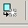

[ HOME ] [ リスト ] [ サムネイル ] [ 中間発表 ] [ 作品保管所① ] [ 作品保管所② ]
| [全件]（96件） を登録順表示 |
| No./ツール ジャンル |
タイトル | 作者 | 配信/投稿 | DL(サイズ) 最終更新 |
感想投票 |
| 000/2000 サンプル |
サンプル | 管理人 | ×/× | 0.00MB 2012/9/24 |
BBS 投票 |
| 001/2000 遊戯王5D'sウィリー・ブレイカーズ |
MAGIC BATTLE | 葡萄 | 可/可 | 25.00MB 2012/12/21 |
BBS 投票 |
| 002/VXAce RPG |
もしも熱血物語だったら | F-man | 可/可 | 0.00MB 2012/12/16 |
BBS 投票 |
| 003/2000 ダンジョンRPG |
闇市ダンジョン | 生糸 | 可/可 | 11.97MB 2013/2/7 |
BBS 投票 |
| 004/VX. リプレイ |
プロフェシーへの回帰 | めざ | 可/可 | 5.53MB 2012/12/4 |
BBS 投票 |
| 005/2000 こつこつレベル上げRPG |
Re:0 | favossy feat. 月乃マキ | 可/不可 | 37.44MB 2013/1/19 |
BBS 投票 |
| 006/2000 デフォ戦 |
わてり/EXTRA | 子狐ヘレンは俺の妹 | いいんじゃないかな/大丈夫だ、問題ない | 33.35MB 2012/12/27 |
BBS 投票 |
| 007/2000 オチを全力で投げ捨てる見るゲ |
ある日のナイ軍 ～冬こそ南の島で暖まろうぜSP～ | 四倍速で横走り | いいんだよ/ぐりーんだよ | 4.93MB 2013/1/30 |
BBS 投票 |
| 008/2000 君とは響きあわないけどたぶんアンデッドナイがエンターブレインと響きあわないゲーム |
もしもアンデッドナイがRPGツクール2003varue+がナイことに怒ったら | りすひームーヨンニイチ | すごくよい/かなりよい | 1.89MB 2013/1/11 |
BBS 投票 |
| 009/2000 短編デフォ戦ＲＰＧ |
DARK★HELL | 主人公1-2 | おｋｋ/ジコセキニン | 2.53MB 2013/1/8 |
BBS 投票 |
| 010/2000 RPG |
MOSIMO QUEST II | こやま | 可/可 | 3.75MB 2012/12/30 |
BBS 投票 |
| 011/2000 デフォ戦ＲＰＧ |
ポテチ王国狩猟祭 | お茶漬け | 可/可 | 0.00MB 2012/10/4 |
BBS 投票 |
| 012/2000 デフォ戦ゲー |
頭なんて悪くたって勇者の仲間になれるんだ | ひまじんツクール2000 | こんなのでよければどうぞ/どうぞどうぞ | 0.00MB 2012/10/4 |
BBS 投票 |
| 013/2000 やるゲ |
埋もれた素材の夢 | 牧場の牛肉 | 可/可 | 11.66MB 2013/1/4 |
BBS 投票 |
| 014/2000 ゲーム |
AsteDream -もしもエルシャダイがRPGだったら- | くらむぼん | 大丈夫だ/問題ない | 10.62MB 2012/12/28 |
BBS 投票 |
| 015/2000 仲間の力を思い知る正統派デフォ戦RPG |
英霊旅日記 | 鷹 | 可/可 | 18.75MB 2012/12/28 |
BBS 投票 |
| 016/2000 ksg集 |
ケツアクメ120連発 ケツアヘ傑作選 | ケツアクメ120連発 ケツアヘ傑作選 | 不可/不可 | 5.38MB 2012/12/22 |
BBS 投票 |
| 017/2000 ｋｓｇ |
やみいっちゃんとエッチなことをするゲーム | ちんちんのびる | 制限された内容 | 非表示 2012/12/17 |
非表示 非表示 |
| 018/2000 ゴメスの奇妙な冒険 |
トラッシュ | ひらやまんこ | 不可/不可 | 0.00MB 2012/10/7 |
BBS 投票 |
| 019/2000 R |
P | G | 可/可 | 0.00MB 2012/10/7 |
BBS 投票 |
| 020/2003 やるゲ |
Iｆ-Live code is flower- | B.B | 可/可 | 0.00MB 2012/10/10 |
BBS 投票 |
| 021/2000 超過激スカトロ系AV |
THE 運ゲー ～地底に沈んだ魔王城～ | エターナラー2世 | 可/可 | 0.05MB 2012/12/23 |
BBS 投票 |
| 022/2000 やるksg |
太陽と竜巻 | かなしみホッチキズ | ○/○ | 0.00MB 2012/10/10 |
BBS 投票 |
| 023/2000 ゴメスゲー |
ドキ☆ gomezだらけの危ない学園生活 ～あなたはゴメスを信じますか？～ | エル | 逆に聞くけど、そんなにゴメスが好きなんだ？ | 2.03MB 2012/12/24 |
BBS 投票 |
| 024/2000 みるksg |
VIPツクスレ 勝手に新人賞授賞式’12 | トカゲのしっぽな | こんなksgでよければ/自己責任でどうぞ | 18.08MB 2012/12/23 |
BBS 投票 |
| 025/2000 切腹ＳＬＧ |
SEPPUKU | Ｋ・Ｒ・シュタインベルク | 可/不可 | 2.41MB 2013/1/26 |
BBS 投票 |
| 026/2000 プチ探索ゲー |
いつか見た夢の続きを | あひょふりぐ | 許可のチャンドラ/許可の炎 | 1.26MB 2013/2/7 |
BBS 投票 |
| 027/2000 動くＲＰＧ |
アブソーバーヒストリー | 女体化ダークメカアレックス | お好きに/どうぞ | 1.39MB 2012/12/25 |
BBS 投票 |
| 028/VXAce 真の愛を探し求めるRPG(見るゲ) |
飢えるハーナス 勝手に続き | ハー芋 | 自己責任でイイヨ! | 9.03MB 2013/1/29 |
BBS 投票 |
| 029/2000 ブーム君 |
ブーム君の屍を超えてゆけ | うにうじ | 屍/屍 | 0.00MB 2012/10/20 |
BBS 投票 |
| 030/2000 デフォ戦RPG |
もしもセイブザクイーン2/3 | 障子にメアリー | 可/可 | 9.98MB 2012/12/31 |
BBS 投票 |
| 031/2000 代理ksg |
独白◆幻肢痛と薔薇に心捧ぐ | ざるそば | 自己責任/自己責任 | 0.73MB 2012/12/24 |
BBS 投票 |
| 032/2000 Ksgコレクション |
タイトルが未定みていな俺コレクション | N-NASI-SAN | 可 | 7.54MB 2012/12/1 |
BBS 投票 |
| 033/2000 はぁとメタメタＲＰＧ |
さよなら、モナーＲＰＧ。 | ローゼンクロイツ ◆ Mvhdw.2dlc | 可/可 | 37.39MB 2012/12/30 |
BBS 投票 |
| 034/2000 見るゲ |
ナイ軍の借金返済作戦 | knt | OK!/OK! | 14.42MB 2013/1/30 |
BBS 投票 |
| 035/2000 アクション |
Mega Moshimo | うっぺれ | 可/可 | 5.17MB 2013/2/7 |
BBS 投票 |
| 036/2000 ksg |
アンリミテッドFATE | えんがわ | おｋ/おｋ | 0.00MB 2013/1/10 |
BBS 投票 |
| 037/2000 コレクション |
もしもこねくしょん | 名無しについて | 超越にＯＫ/大丈夫過ぎる、問題ない | 32.76MB 2013/1/12 |
BBS 投票 |
| 038/2003 ぽんこつ魔法RPG |
Temple of Shadows | めふぃすと | 自己責任で可/自己責任で可 | 32.23MB 2013/2/2 |
BBS 投票 |
| 039/2000 デフォ戦RPG |
リハビリその４ | 山本ブライアン | 可/可 | 2.31MB 2012/12/23 |
BBS 投票 |
| 040/2000 総集編 |
懺悔室 | 考える名無しさん | やるの？/やるの？ | 1.42MB 2012/12/1 |
BBS 投票 |
| 041/2000 エキセントリック代理ksg |
Cancel or die | ユニバーサル絶叫兄弟 | はちみつ/くまさん | 6.63MB 2012/12/13 |
BBS 投票 |
| 042/2000 短編シンプルＲＰＧ |
魔王の挑戦状 | プラチナ◆PTWuwkfBxE | 可/可 | 3.27MB 2012/12/30 |
BBS 投票 |
| 043/2000 ロールプレイングゲーム |
EruruAdventure - 2012 EDITION - | WL(オリジナル版制作)+XX(2012版制作) | 可/可 | 2012/12/30 |
BBS 投票 |
| 044/2000 TD |
Mosimo Tower Defense Dattara 2012 | ssz | ○/○ | 0.00MB 2012/11/10 |
BBS 投票 |
| 045/2000 シリアスミステリー |
偽装のサーカス | 池田さん | 神/神 | 10.43MB 2013/1/30 |
BBS 投票 |
| 046/2000 私がたった1人で1時間かけて作り上げた壮大なるエンターテインメント |
ソーレソレソレ | ンニー(株) | どうぞ…/いいよっ その他利用も許可 | 2.57MB 2012/12/4 |
BBS 投票 |
| 047/2000 異世界飛ばされ系デフォ戦RPG |
もエロゲ | ABS | 可/可 | 223.93MB 2013/1/18 |
BBS 投票 |
| 048/2000 STGミニゲーム |
射撃 | sinkai | いいよ/いいよ | 0.57MB 2012/12/23 |
BBS 投票 |
| 049/2000 一本道ＲＰＧ |
ロミくんとジュリちゃん | 時計歩兵 | なんでこんなものでしたいのか分からないけど別にいいよ | 17.54MB 2012/12/1 |
BBS 投票 |
| 050/2000 RPG |
BRAVELY WORKING FLYING妖精さん | 一般1-3 | だ/め | 7.54MB 2012/12/20 |
BBS 投票 |
| 051/2000 RPG |
海賊リメイクオーバーリローテッドセカンド | えんりゅう | 可/可 | 14.18MB 2013/1/29 |
BBS 投票 |
| 052/2000 マップ散歩 |
勇者わてりの大冒険 と ふれいむさんの気だるい日常 | 起楽 侑 | どーぞ/どーぞ | 3.99MB 2013/1/1 |
BBS 投票 |
| 053/2000 百合コメ |
百合っぽいお話とか | L&E | 可/可 | 3.90MB 2012/12/22 |
BBS 投票 |
| 054/2000 紅白お祭りksg |
八大地獄と極楽ぬくぬくヘルス温泉 | 黄泉つ | 億京/兆億京 | 21.78MB 2013/2/7 |
BBS 投票 |
| 055/2000 中編RPG |
ABCD冒険記 | COMタロウさんの世界 | 可/可 | 18.67MB 2013/1/23 |
BBS 投票 |
| 056/2000 Ｋｓｇコレクション |
マーミア式Ｋｓｇコレクション | マーミア副部長 | おk/おk | 35.55MB 2012/12/7 |
BBS 投票 |
| 057/2000 迷宮探索系デフォ戦RPG |
迷宮組曲 | ST | 可/不可 | 12.90MB 2013/1/1 |
BBS 投票 |
| 058/2000 読む俺得百合erg |
桃色通信6月号 | 徳明 | 抜く自信があるならば/良いけど確実に消される予感 | 0.94MB 2012/12/22 |
BBS 投票 |
| 059/2000 最初からクライマックスなデフォ戦ゲー |
あんこくのみらいで | 中の外の人 | 可/可 | 0.00MB 2012/12/11 |
BBS 投票 |
| 060/2000 もしも(やるゲ) |
もしもアレックスだけだったら | グヤビーン | おｋすぐる | 0.05MB 2012/12/25 |
BBS 投票 |
| 061/XP RPG |
JASIN | いと | △/× | 134.57MB 2013/2/7 |
BBS 投票 |
| 062/2000 ジュエル倉庫番 |
宝石洞窟 | しじみ | 哥/哥 | 1.39MB 2012/12/24 |
BBS 投票 |
| 063/2000 悪魔狩り体験恋愛アドベンチャー |
SLASH -THE DEMON HUNTER- | 内藤春人 | 可/可 | 1.10MB 2012/12/16 |
BBS 投票 |
| 064/2000 いちめんのksgコレクション |
いちめんのksgコレクション | いつまでも名無し | どうぞ/どうぞ | 24.01MB 2013/1/23 |
BBS 投票 |
| 065/XP SRPG |
ファイアーエンブレム もしもの神 未完成版 | nagatuki | 可/不可 | 6.02MB 2013/1/15 |
BBS 投票 |
| 066/2000 RPG |
リンファンタジー | 横蜷 | 付属テキスト参照/同左 | 0.00MB 2012/12/18 |
BBS 投票 |
| 067/2000 反社会ウルトラポリティカル選挙ＲＰＧ |
もしも in Real World ～アベ・レクイエム～ | ゾマホン | 大丈夫？/不謹慎ゲーだよ？ | 6.71MB 2012/12/23 |
BBS 投票 |
| 068/2000 自宅オフライン対戦クイズゲーム |
QuizMaogunAcademy | たわし | やったら/やりかえす | 3.34MB 2012/12/24 |
BBS 投票 |
| 069/2000 過去作品紹介 |
三行でわかるキャッペソフト | マーベルキャプテンペガサス・アルティメットクリムゾン零式・ハイパーアンリミテッドエディションType：G ◆do7wOyQeJk | 可/可 | 0.34MB 2012/12/21 |
BBS 投票 |
| 070/2000 amenbreak |
Revenge of a "AMEN GORILLA" -1997- | 14- | ダメ/ムリ | 13.73MB 2013/2/5 |
BBS 投票 |
| 071/2000 デフォ戦 |
三将軍の毎日ダンジョン | 魔法幼女リリカルneet | いいよ/いいよ | 0.26MB 2012/12/23 |
BBS 投票 |
| 072/2000 迷子になりながら事の成り行きを見るゲ |
ウィンドⅠのおつかい外伝～カナエール様は心配性～ | 大富豪の大貧民役 | おｋ/おｋ | 1.30MB 2012/12/25 |
BBS 投票 |
| 073/2000 3D迷路 |
完全3D迷路 | ALPHA | 可/可 | 0.76MB 2012/12/23 |
BBS 投票 |
| 074/2003 ｋｓｇ |
ライチのぼうけん | たけ | 可/不可 | 0.46MB 2012/12/23 |
BBS 投票 |
| 075/2000 パズル |
安心安全マインスイーパ | カッチンコッチンコ | 可/可 | 1.42MB 2013/1/30 |
BBS 投票 |
| 076/2000 見るゲ |
ほのぼのねこねこ～核にゃんと霊にゃんのにゃんにゃん物語だにゃん♪～ | あいうえお | 不可/不可 | 9.38MB 2012/12/23 |
BBS 投票 |
| 077/2000 見る＋デフォだと思うよ |
俺っクション | ブラウン | 可能 | 7.84MB 2013/2/2 |
BBS 投票 |
| 078/2000 セクロス |
わてりとたのしいセクロス | ＫＳＤ | １１４/５１４ | 2.64MB 2012/12/23 |
BBS 投票 |
| 079/2000 探して集めるゲーム |
101人のブライアン | ksg40本目ぐらい | 好きにしてくださいっておじいちゃんの遺言に（ｒｙ/好きにしてくださいっておじ（ｒｙ | 3.04MB 2013/1/29 |
BBS 投票 |
 |
080/2000 未定 |
なんかだすよ | MTEN&UKON | 可/可 | 0.00MB 2012/12/23 |
BBS 投票 |
|---|
| 081/2000 見るゲ |
奔走するナイ様の死闘 | デスダークネスΩ | 不可/不可 | 1.18MB 2012/12/25 |
BBS 投票 |
| 082/2000 ｋｓｇ |
絶壁天国＋リリア・キングフォーム | リリアさん大好き丸 | リリアかわいい/リリアさん超かわいい | 0.78MB 2012/12/24 |
BBS 投票 |
| 083/2000 そんなものない |
2013年からよろしく | ナナシヨリアイヲコメテ | か/か | 0.00MB 2012/12/24 |
BBS 投票 |
| 084/2000 アクションパズル |
windy posession | 蝶番 | 可/可 | 0.98MB 2013/2/7 |
BBS 投票 |
| 085/VX. エターなることを放棄するRPG |
エターナルデフォルト フライングエタリー | 流久利亜 | たまってる、ってやつなのかな？/しょうがないにゃあ…いいよ | 16.02MB 2012/12/24 |
BBS 投票 |
| 086/2000 ADV |
たてもの脱出ゲーム | とうふ | お好きに/お好きに | 1.98MB 2012/12/28 |
BBS 投票 |
| 087/2000 アドベンチャー |
具現体達と散歩道 虹色のコインと謎に包まれし秘宝 | ルズ | 可/可 | 4.78MB 2013/2/7 |
BBS 投票 |
| 088/2000 守る力を鍛えるRPG |
鬼バリア | ◆WLpLeO3gVY | 可 | 4.37MB 2012/12/24 |
BBS 投票 |
| 089/2000 講座ゲー |
三馬鹿でもわかる変数講座 | シバルバー | 可/可 | 0.00MB 2012/12/24 |
BBS 投票 |
| 090/2000 ksg(ほぼ見るゲ) |
R＆W2012 ksg -Ⅹ- | グんだるーん | 自己責任/自己責任 | 0.50MB 2012/12/24 |
BBS 投票 |
| 091/2000 デフォ戦オナニｋｓｇゲー |
具現化規制法案（仮）（笑） | 若葉勢 | やってみるか？/忠告はしたぞ？ | 83.35MB 2012/12/27 |
BBS 投票 |
| 092/2000 ググれ |
マニラの西48km | ◆2aLlGIkY8s | (・ω<)/(>ω・) | 1.02MB 2012/12/24 |
BBS 投票 |
| 093/2000 読むゲ（R-18L) |
Into the Lilizm | 崇拝しすぎた刃 | ×/× | 1.02MB 2012/12/24 |
BBS 投票 |
| 094/2000 女子力ゲー |
モテるツクール女子力を磨く為の4つの心得 | かきぴー | ○/○ | 0.25MB 2012/12/24 |
BBS 投票 |
| 095/2000 ホラー |
地獄探偵おぼなす | 脂はむ | 可/可 | 0.12MB 2012/12/24 |
BBS 投票 |
(1/1)